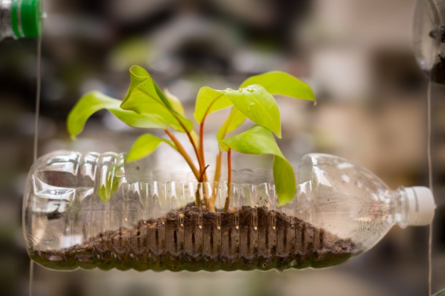

¿Qué es reutilizar?
Reutilizar es: “volver a utilizar algo, bien con la función que desempeñaba anteriormente o con otros fines. Este concepto forma parte de las 3R del reciclaje: reducir, reutilizar y reciclar.
Importancia de la reutilización
La reutilización es fundamental porque permite alargar la vida útil de los objetos y materiales, reduciendo así la cantidad de residuos que generamos y la presión sobre los recursos naturales. Al dar un segundo uso a productos como envases, ropa, muebles o dispositivos electrónicos, se evita la necesidad de fabricar nuevos bienes, lo que implica un ahorro significativo de energía y una disminución en la contaminación asociada a los procesos industriales.
 Imagen de una forma de reciclaje¿Qué fomenta?
reutilizar fomenta una cultura de consumo responsable y solidario, ya que muchas veces los objetos que ya no necesitamos pueden ser útiles para otras personas, fortaleciendo la cooperación social y la conciencia ambiental. También tiene un impacto económico positivo, pues ayuda a ahorrar dinero y abre oportunidades para negocios de reparación, mercados de segunda mano y proyectos creativos que transforman lo viejo en algo nuevo.